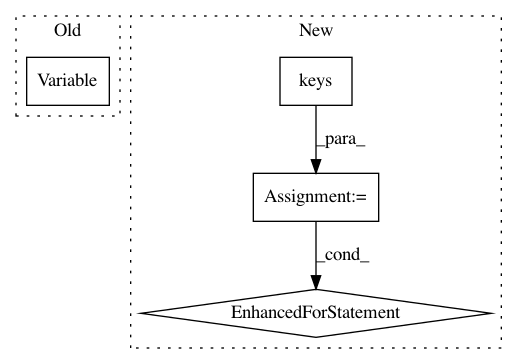

645c7c386e62d2fb1d50f4621c1a52645a13869f,fast_neural_style/neural_style/neural_style.py,,stylize,#Any#,137
Before Change
content_image = content_image.unsqueeze(0)
if args.cuda:
content_image = content_image.cuda()
content_image = Variable(content_image, volatile=True)
style_model = TransformerNet()
style_model.load_state_dict(torch.load(args.model))
if args.cuda:
After Change
style_model = TransformerNet()
state_dict = torch.load(args.model)
// remove saved deprecated running_* keys in InstanceNorm from the checkpoint
for k in list(state_dict.keys()):
if re.search(r"in\d+\.running_(mean|var)$", k):
del state_dict[k]
style_model.load_state_dict(state_dict)
style_model.to(device)
output = style_model(content_image).cpu()
utils.save_image(args.output_image, output[0])
In pattern: SUPERPATTERN
Frequency: 3
Non-data size: 4
Instances
Project Name: pytorch/examples
Commit Name: 645c7c386e62d2fb1d50f4621c1a52645a13869f
Time: 2018-04-24
Author: soumith@gmail.com
File Name: fast_neural_style/neural_style/neural_style.py
Class Name:
Method Name: stylize
Project Name: naoto0804/pytorch-AdaIN
Commit Name: 4a5eef64d2a0ab5e1737ffbb345d9e72d2f1adc9
Time: 2018-05-16
Author: inoue@hal.t.u-tokyo.ac.jp
File Name: train.py
Class Name:
Method Name:
Project Name: dpressel/mead-baseline
Commit Name: 7a4f4148317f7274c0c88095c037e93f95b1d00d
Time: 2018-09-25
Author: dpressel@gmail.com
File Name: python/baseline/pytorch/lm/model.py
Class Name: AbstractLanguageModel
Method Name: make_input